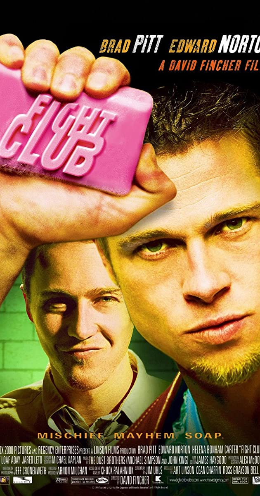
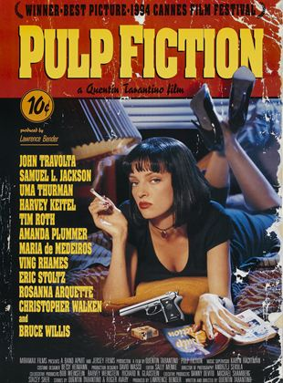
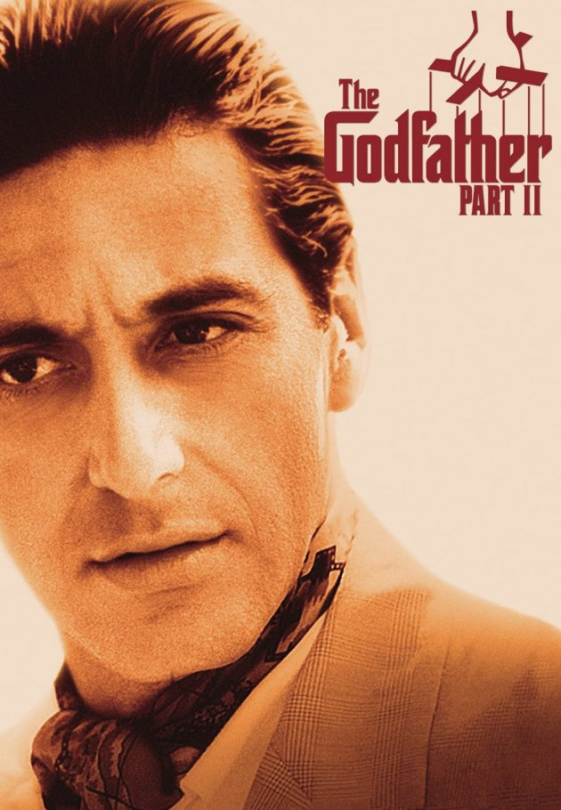

IMDB listesinde yer alan ilk 10 filme hep birlikte bakalım.
IMDB Top 10 Film
10 - Dövüş Kulübü
Dövüş Kulübü, Chuck Palahniuk tarafından yazılmış aynı isimli romandan uyarlanan kült filmdir. 1999 yapımı olan film, David Fincher tarafından yönetilmiştir ve başrollerde
Brad Pitt, Edward Norton ve Helena Bonham Carter rol almıştır. Müziklerini Dust Brothers yapmıştır.
9 - Başlangıç

Başlangıç, Christopher Nolan tarafından yazılan ve yönetilen bilimkurgu türündeki ABD filmidir. 8 Temmuz 2010 tarihinde İngiltere galası yapılmıştır. Film yayınlanmasından kısa bir süre sonra
son 25 yılın en iyi filmleri arasında gösterilmiştir.
8 - Schindler'in Listesi

Schindler'in Listesi, Steven Spielberg'in yönettiği ve yapımcılığını üstlendiği ve Steven Zaillian tarafından yazılan 1993 tarihli Amerikan epik tarihsel drama filmidir.
Avustralyalı romancı Thomas Keneally'nin 1982 tarihi kurgu romanı Schindler'in Sandığı'na dayanıyor
7 - Ucuz Roman
Quentin Tarantino yönetmenliğindeki Roger Avary ile birlikte yazılmış, 1994 yapımı, kült kabul edilen bir filmdir.
Ucuz Roman, En İyi Film dahil 7 dalda Oscar'a aday gösterilmiş ve En İyi Orijinal Senaryo Oscarı'nı almıştır.
6 - Yüzüklerin Efendisi: Kralın Dönüşü
Yüzüklerin Efendisi: Kralın Dönüşü, Peter Jackson'ın yönetmenliğini yaptığı, J. R. R. Tolkien'in Yüzüklerin Efendisi kitaplarının ikinci ve üçüncü bölümlerinden uyarlanan
2003 yılında gösterime giren fantezi filmidir.
Yüzüklerin Efendisi film serisinin Yüzük Kardeşliği ve İki Kule'den sonra üçüncü filmidir.
5 - 12 Öfkeli Adam

12 Öfkeli Adam, Sidney Lumet'in yönettiği 1957 ABD yapımı drama filmidir. Reginald Rose'un aynı adlı oyunundan uyarlanan film bir duruşmada bir jüri üyesinin diğer
on bir jüri üyesini şüphelinin suçsuz olduğu konusunda, makul şüphe temelinde, ikna etme çabaları hakkındadır.
4 - Baba 2
Baba II, ilk filmin yapımından iki sene sonra çekilen film. Mario Puzo ve Francis Ford Coppola'nın ortak yazdığı senaryoyla kurgulanmıştır.
6 Oscar Ödülü kazanmıştır.
3 - Batman: Kara Şovalye

Kara Şövalye, Christopher Nolan'ın yönettiği bir süper kahraman filmidir. DC Comics'in kurgusal karakteri Batman'den uyarlanan 2005 tarihli Batman Başlıyor filminin devamıdır.
Kara Şövalye'nin senaryosunu Christopher ve kardeşi Jonathan Nolan yazmıştır. Hikâyeyi ise David S. Goyer oluşturmuştur.
2 - Baba

Baba, Mario Puzo'nun yazdığı aynı adlı romandan uyarlanan, Francis Ford Coppola'nın yönettiği,
Marlon Brando ve Al Pacino'nun başrollerini paylaştığı filmdir.
Filmde ayrıca yardımcı rollerde James Caan, Robert Duvall, Diane Keaton, John Cazale vardır.
1 - Esaretin Bedeli

Esaretin Bedeli, Frank Darabont'un senaryosunu yazdığı ve yönettiği, başrollerinde Tim Robbins ve Morgan Freeman'ın yer aldığı 1994 yapımı Amerikan dram filmidir.